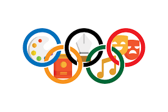

Partido Nacionalista Conservador Español
Bienvenidos a la pagina de nuestro partido PNCE
Sobre nosotros
El partido que lo cambiará todo a bien 04/03/2024
Somo el PNCE, un parido con hambre de cambios, buscamos arreglar a España con nuestas acciones, uno de nuestros simbolos caracteristicos es el ave Fenix, que resurgió de sus cenizas. Nosotros queremos haer lo mismo con España, pues creemos que necesita muchos cambios, también explicaremos en detalle lo que está aqui resumido en un mitin, para aquellas personas interesadas en nuestro pensamiento.
El porque de nuestro partido
Un partido dedicado a la gente , 04/03/2024
Como los cuatro fundadores del partido creeiamos que podiamos dar un enfoque politico diferente,para poder expresar nuestras opiniones empezamos este partido y poco a poco hemos llegado a una gran cantidad de gente y formando una comunidad.
¿Qué buscamos?
Nosotros somos claros, buscamos solucionar algunos de los problemas mas importantes en la actualidad, como pueden ser la cultura, el medio ambiente, la economía y en general, nuestro sistema político actual.
En lo que mas nos centraremos
-
ECONOMIA
Un sistema en el que nadie toque la economía -
 ECOLOGIA
ECOLOGIA
Intentaremos reducir la contaminación en un 30% -

CULTURA
Intentaremos conservar las tradiciones.
Puntos de interés
Libertad España Confianza Prosperidad Monarquía Compromiso Individualidad Realidad Familia Progreso Factores Fraternidad Esperanza Salud